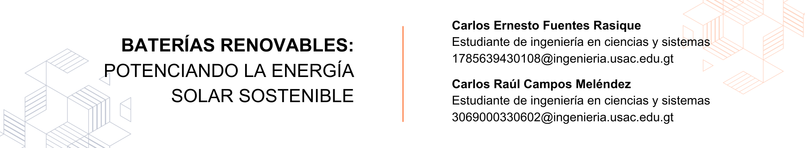

9 Baterías renovables: Potenciando la energía solar sostenible

9.1 Introducción
En la búsqueda de tecnologías sostenibles para las construcciones que día con día se realizan se han encontrado problemáticas como el almacenamiento de energía para su uso en momentos de baja producción solar, asegurando una energía limpia y continua en las edificaciones, existen soluciones como combinación de tecnologías solares y sistemas de almacenamiento de energía. Las baterías de almacenamiento, en particular, se han posicionado como una herramienta clave para aprovechar al máximo el potencial de la energía solar y promover la sostenibilidad en nuestras comunidades y hogares.
9.2 Artículo
El almacenamiento de energía y los paneles solares representan un escalón muy importante en la búsqueda de una transición energética más sostenible. Los paneles solares, también conocidos como paneles fotovoltaicos, son una fuente de energía renovable prometedora. Convierten la luz solar en electricidad, proporcionando una solución ambientalmente amigable y sostenible para la generación de energía. A medida que la tecnología solar ha avanzado y los costos de producción han disminuido, los paneles solares se han vuelto más accesibles para hogares, empresas e industrias.
Sin embargo, una de las limitaciones de la energía solar es su intermitencia, ya que la generación de electricidad depende del sol, lo que significa que la producción no es constante durante todo el día o en días nublados. Las baterías de almacenamiento, como el Powerwall y otros sistemas similares, son dispositivos que permiten capturar y almacenar el exceso de energía producida por los paneles solares durante los períodos de alta producción, para su uso posterior cuando la generación es más baja o cuando se necesita energía adicional.
“Powerwall es un sistema de batería integrado que almacena la energía solar para protección de respaldo, de modo que cuando la red se corta, la energía permanece en funcionamiento. El sistema detecta apagones y se recarga automáticamente con luz solar para mantener los electrodomésticos funcionando durante días.” (Corporation 2023)
Productos como la batería Powerwall ofrece almacenar energía limpia y renovable, ideal para negocios en donde se requiere un flujo de energía constante. El uso de estos productos permite reemplazar los generadores de energía convencionales que funcionan a base de combustible fósil que generan grandes cantidades de dióxido de carbono (CO2), reduciendo así el efecto invernadero en la atmósfera y el impacto ambiental.
Una de las ventajas de utilizar productos como son los paneles solares y las baterías es la producción propia de energía renovable en las casas y edificios, esto hace que la construcción se convierta en un edificio autónomo o net-zero, es decir que genera la misma cantidad o superior de energía que consume para su producción y mantenimiento. Al ser un edificio autosuficiente no depende completamente de la red eléctrica convencional.
“La participación de energía renovable en la matriz de generación eléctrica a diciembre del 2020 es aproximadamente de 75.28 por ciento, es decir, que del total de energía generada a la fecha 11,122.06 GWh, la renovable fue de 8,372.51 GWh. La generación hidroeléctrica presenta la mayor participación con 5,816.54 GWh (un 52.30% de las energías renovables).” (Ministerio Energía y Minas, 2020)
Figura 9.1: Composición de la matriz energética.
Participación de las energías renovables en la generación de energía eléctrica
Figura 9.2: Participación de las energías renovables.
Los edificios autónomos tienen un gran impacto hoy en día dado a que su objetivo es reducir costes de mantenimiento, así como proteger el medio ambiente. Estos edificios no tienen solo paneles solares y baterías que permiten recolectar y almacenar energía, sino también sistemas de monitoreo que permiten controlar eficazmente la energía utilizada en el edificio.
En Guatemala existen construcciones que pretenden reducir los costos y preservar el medio ambiente. Entre estos edificios podemos mencionar:
Town Nutrition: Empresa que se dedica a la nutrición, el manejo y la salud animal. Sus instalaciones se ubican en la Av. Petapa 47-31, Ciudad de Guatemala. Estas instalaciones se caracterizan por producir el 100% de la energía gracias a los paneles solares y el uso de baterías.
Figura 9.3: Paneles solares de los edificios Town Nutrition. Fuente: https://goo.su/eWngjH1
“La empresa genera el 100% de la energía necesaria para la producción de premezclas en su planta de Guatemala. Iniciando en 2019, la primera fase incluyó la instalación de 100 paneles solares con una capacidad de 35 kW. La segunda fase consideró 112 paneles adicionales, con una capacidad de 44.8 kW. El proyecto permitió una disminución de 54,653 kg de dióxido de carbono producido en el año.” (Enertiva, 2022)
Zona Pradera: Es un centro empresarial ubicado en el céntrico bulevar Los Próceres, en la zona 10 de la ciudad de Guatemala. Esta construcción se compone de 5 torres con oficinas y están conectadas entre sí por plazas comerciales y fue diseñado por el arquitecto Pelayo Llarena quien también fue unos de los fundadores de la facultad de Arquitectura de la Universidad de San Carlos de Guatemala en el año 1958.
Figura 9.4: Edificios Zona Pradera ubicados en la zona 10 de Guatemala. Fuente: https://goo.su/Bx9gA
“Con el objetivo de reducir su huella de carbono y proveer a la comunidad energía limpia, Zona Pradera instaló 609 paneles solares. Esta tecnología le permitirá reducir hasta 200 toneladas métricas de su emisión anual de dióxido de carbono.” (Redacción Guatenergía, 2022)
“Esta iniciativa se suma a otras que Zona Pradera lleva a cabo constantemente para ser más verde y reducir su impacto en el medio ambiente. La separación de residuos y el reciclaje se encuentran entre sus políticas de funcionamiento desde hace varios años. Además, se mantiene una investigación constante para la implementación de tecnologías que contribuyan a la reducción de la huella de carbono, de la mano con empresas expertas en temas de sostenibilidad y eficiencia operativa.” (Redacción Guatenergía, 2022)
9.3 Conclusiones
El uso de tecnología como son los paneles solares, baterías y monitores permiten producir su propia energía renovable y almacenarla de forma segura para utilizarla en su producción y actividades diarias.
Las baterías reducen las caídas de voltaje y la probabilidad de cortes instantáneos de energía en las construcciones, es bueno porque protege los mismos aparatos electrodomésticos y maquinaria eléctrica sensibles a los cambios bruscos de voltaje en la red eléctrica.
La implementación exitosa de tecnologías de energías renovables, como la energía solar y las baterías de almacenamiento, en edificios de Guatemala no solo reduce la dependencia de fuentes convencionales de energía, sino que también posiciona a Guatemala en la dirección correcta hacia un futuro energético más limpio y sostenible.
9.4 Referencias
- [1] “Powerwall”, Tesla, acesso el 02 de agosto de 2023, https://www.tesla.com
- [2] “Zona Pradera ilumina el futuro a través de la energía solar”, Guatenergia, acceso el 11 de agosto de 2023, https://guatenergia.com
- [3] “5 EMPRESAS OPTAN POR PRODUCIR SU PROPIA ENERGÍA SOLAR Y RENOVABLE EN GUATEMALA”, Marlene Gutiérrez, Enertiva, acceso el 11 de agosto de 2023, https://enertiva.com
- [4] “Net-Zero Buildings: Guiding the Way Ahead for Sustainable Architecture”, Pragya Sharma,Novatr Network, acceso el 11 de agosto de 2023, https://www.novatr.com
- [5] Ministerio de Energía y minas, “INFORME GENERAL 2020”, Publicación Anual (2020): 10-12. https://mem.gob.gt